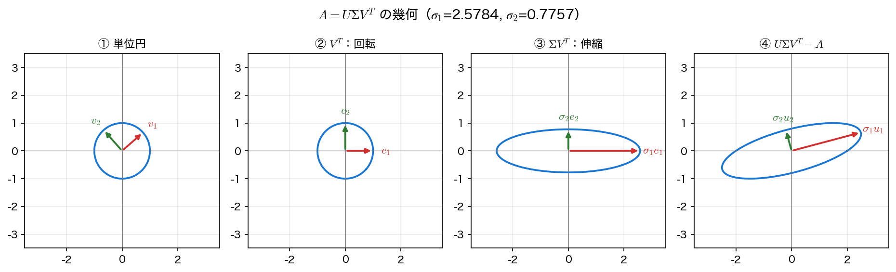

SVD の原理と低ランク近似
行列は「ベクトルを別のベクトルに移す写像」である。その写像がどんな形をしているかを、もっとも見通しよく書き下したものが特異値分解である。結論を先に言えば、どんな行列も「直交変換 → 軸方向の伸縮 → 直交変換」の 3 段階に分解できる（直交変換とは長さと角度を保つ変換のことで、回転だけでなく鏡映も含む）。
定義と幾何
\(m\times n\) の実行列 \(A\) に対して、
を満たす直交行列 \(U\)（\(m\times m\)）・\(V\)（\(n\times n\)）と、対角成分が
と並ぶ対角行列 \(\Sigma\)（\(m\times n\)）が必ず存在する。これが 特異値分解（singular value decomposition, SVD） で、\(\sigma_i\) を 特異値、\(U\) の列 \(u_i\) を 左特異ベクトル、\(V\) の列 \(v_i\) を 右特異ベクトル という。
固有値分解 \(A=P\Lambda P^{-1}\) と比べると違いがはっきりする。固有値分解は正方行列にしか使えず、\(P\) は一般に直交しないし、そもそも対角化できない行列もある。SVD は 長方形でも階数落ちでも必ず存在し、両側とも直交行列 である。代償として、入り口の基底 \(V\) と出口の基底 \(U\) が別物になる。
\(Av_i=\sigma_i u_i\) という関係を読むと、幾何的な意味が見える。\(V^\top\) が入力を「都合のよい軸」に合わせ、\(\Sigma\) が各軸を \(\sigma_i\) 倍に伸縮し、\(U\) が出力の向きへ合わせる。\(U,V\) は直交行列なので長さも角度も保つが、行列式が \(-1\) なら鏡映を含む ── 以下で「回す」と言うときは、この鏡映込みの直交変換のことだと思ってほしい。伸縮を挟む以外に形をゆがめる操作がないので、単位球は楕円体に写り、その半軸長がちょうど特異値になる。
まず \(2\times2\) の例で分解そのものを確かめる。
import numpy as np
A = np.array([[2.0, 1.5],
[0.0, 1.0]])
U, S, Vt = np.linalg.svd(A)
print("特異値 σ:", np.round(S, 6))
print("U =", np.round(U, 4).tolist())
print("V^T =", np.round(Vt, 4).tolist())
print(f"A - UΣV^T の最大差 = {np.abs(A - (U * S) @ Vt).max():.2e}")
print(f"U^TU - I の最大差 = {np.abs(U.T @ U - np.eye(2)).max():.2e}")
print(f"V^TV - I の最大差 = {np.abs(Vt @ Vt.T - np.eye(2)).max():.2e}")
特異値 σ: [2.578439 0.775663]
U = [[0.9665, -0.2567], [0.2567, 0.9665]]
V^T = [[0.7497, 0.6618], [-0.6618, 0.7497]]
A - UΣV^T の最大差 = 4.44e-16
U^TU - I の最大差 = 2.22e-16
V^TV - I の最大差 = 2.22e-16
np.linalg.svd は \(\Sigma\) を対角行列ではなく特異値の \(1\) 次元配列 S で返す。そのため再構成は U @ np.diag(S) @ Vt と書けるが、上のように (U * S) @ Vt とすると \(\Sigma\) を作らずに済む（\(U\) の第 \(i\) 列を \(\sigma_i\) 倍することに相当する）。大きな行列ではこの書き方のほうが速く、記憶容量も食わない。ただしこの書き方が使えるのは \(U\) の列数と S の長さが一致するとき、すなわち正方行列か、後で出てくる full_matrices=False の 簡約 SVD のときに限る。既定の full_matrices=True で長方形行列を分解すると \(U\) は \(m\times m\)、S の長さは \(q=\min(m,n)\) なので、形が合わずに失敗する。
次に「単位円が楕円に写り、半軸長が特異値になる」ことを直接測る。円周上を細かく刻んで像の長さの最大・最小を取るだけである。
th = np.linspace(0, 2*np.pi, 200001)
circ = np.vstack([np.cos(th), np.sin(th)])
r = np.linalg.norm(A @ circ, axis=0)
print(f"像の最大半径 = {r.max():.10f} σ_1 = {S[0]:.10f}")
print(f"像の最小半径 = {r.min():.10f} σ_2 = {S[1]:.10f}")
print(f"det A = {np.linalg.det(A):.10f} σ_1σ_2 = {S.prod():.10f}")
像の最大半径 = 2.5784388020 σ_1 = 2.5784388020
像の最小半径 = 0.7756631644 σ_2 = 0.7756631643
det A = 2.0000000000 σ_1σ_2 = 2.0000000000
半軸長は \(10\) 桁で特異値に一致し、面積の拡大率 \(|\det A|\) は \(\sigma_1\sigma_2\) に一致する（\(|\det A|=\prod_i\sigma_i\) が成り立つのは 正方行列 に限った話である。長方形行列に行列式はない）。\(\sigma_1/\sigma_2\) が大きいほど楕円は細長く、行列は「ある方向をつぶす」性質が強い。この比
が \(2\) ノルムの条件数 である（\(\sigma_q=0\)、すなわち階数落ちなら \(\kappa=\infty\) とする）。\(A\) が正方かつ正則で、\(A\) を固定して右辺だけを \(b\to b+\delta b\) と摂動するとき、解の相対誤差の増幅率はたかだか \(\kappa(A)\) にしかならない ── \(\kappa\) は連立一次方程式 \(Ax=b\) を解くときの 増幅率の上限 を与える（下限は \(1/\kappa\) になる。演習1(c) で確かめる）。

特異値は一意、特異ベクトルは符号まで
特異値 \(\sigma_i\) は行列だけで決まる一意な量だが、特異ベクトルには符号の任意性がある。\(u_i,v_i\) を同時に \(-1\) 倍しても \(A=U\Sigma V^\top\) は変わらないからである（\(\sigma_i\) が重複するとさらに大きな任意性が出る）。数値ライブラリが返す符号は実装依存なので、図に描いたり係数の正負を議論したりするときは、自分で符号の規約を決めて固定する。この講義の図では「絶対値最大の成分が正」となるようにそろえている。
固有値分解との関係
SVD と固有値分解は無関係ではない。\(A=U\Sigma V^\top\) を使うと
となる。\(A^\top A\) は対称半正定値なので直交行列で対角化でき、その 固有値が \(\sigma_i^2\)、固有ベクトルが \(v_i\) である（同様に \(AA^\top\) の固有ベクトルが \(u_i\)）。つまり SVD は「\(A^\top A\) の固有値分解」を、\(A^\top A\) を作らずに直接求めたものだと言える。
実際の計算で \(A^\top A\) を作ってはいけない。\(A\) が 列フルランク（\(m\ge n\) で階数が \(n\)）なら条件数がちょうど \(\kappa(A)^2\) に悪化し、小さい特異値が数値的に失われるからである。\(m<n\) の行フルランク行列では事情はさらに悪く、\(\kappa(A)\) が有限でも \(A^\top A\) は必ず特異になる。関係式は理論の理解に使い、計算は np.linalg.svd に任せる。
ここからは \(60\times40\) の乱数行列で性質を確認する。full_matrices=False を付けると \(U\) を \(60\times40\)、\(V^\top\) を \(40\times40\) に切り詰めた 簡約 SVD が返り、無駄な列を持たずに済む。
rng = np.random.default_rng(0)
B = rng.normal(0, 1, (60, 40))
U, S, Vt = np.linalg.svd(B, full_matrices=False)
ev = np.sort(np.linalg.eigvalsh(B.T @ B))[::-1]
print("形状:", U.shape, S.shape, Vt.shape)
print("先頭 5 個の σ:", np.round(S[:5], 4))
print(f"A^TA の固有値 - σ^2 の最大差 = {np.abs(ev - S**2).max():.2e}")
fro = np.linalg.norm(B, "fro")
print(f"|A|_F^2 - Σσ_i^2 = {abs(fro**2 - (S**2).sum()):.2e}")
print(f"|A|_2 - σ_1 = {abs(np.linalg.norm(B, 2) - S[0]):.2e}")
形状: (60, 40) (40,) (40, 40)
先頭 5 個の σ: [13.9496 13.2111 12.9299 12.0156 11.7424]
A^TA の固有値 - σ^2 の最大差 = 3.69e-13
|A|_F^2 - Σσ_i^2 = 1.82e-12
|A|_2 - σ_1 = 3.55e-15
同時に \(2\) つの重要な等式も確かめられた。
前者は「最大の伸び率」、後者は「全成分の二乗和」である。第2回の Parseval の等式が「時間領域のエネルギー ＝ 周波数領域のエネルギー」だったのと同じで、直交変換はエネルギーを保つ。ここでは行列のエネルギーが特異値の二乗として各モードに配分されている。この配分こそが、次に述べる打ち切りの根拠になる。
階数とエネルギー
\(\sigma_i>0\) である個数 \(r\) が \(A\) の 階数（rank） で、SVD は \(A\) を階数 \(1\) の行列の和に分ける。
各項 \(u_iv_i^\top\) はノルム \(1\) の階数 \(1\) 行列で、その重みが \(\sigma_i\) である。\(\sigma_i\) が急速に小さくなる行列では、上位の数項だけで \(A\) のほとんどが再現できる。そこで上位 \(k\) 項だけ残したものを
と書き、階数 \(k\) の打ち切り近似 と呼ぶ。実装は「先頭 \(k\) 列だけを掛ける」ことに尽きる。
理論上の階数（\(\sigma_i\ne0\) の個数）と、実用上の階数は別物であることに注意したい。測定データでは丸め誤差や雑音のせいで \(\sigma_i\) が厳密に \(0\) になることはまずなく、\(\sigma_i\) がある高さで急に落ち込む位置を「実質的な階数」とみなす。np.linalg.matrix_rank はこの考え方で、\(\sigma_i\) が \(\sigma_1\cdot\max(m,n)\cdot\varepsilon\) より大きい個数を数えている。
Eckart–Young の定理
打ち切り近似 \(A_k\) は、単に「上から \(k\) 個取っただけ」ではない。階数 \(k\) 以下のあらゆる行列の中で、\(A\) にもっとも近い ことが証明できる。これが Eckart–Young（–Mirsky）の定理 である。
誤差が \(\sigma_{k+1}\) ちょうどになるのが要点である。捨てた成分のうち最大のものが、そのまま近似誤差になる。だから特異値スペクトルを見れば、打ち切ったときの誤差が計算前に分かる。
for k in (1, 5, 10, 20, 39):
Ak = lowrank(U, S, Vt, k)
e2 = np.linalg.norm(B - Ak, 2)
ef = np.linalg.norm(B - Ak, "fro")
tail = np.sqrt((S[k:]**2).sum())
print(f"k={k:2d}: |A-Ak|_2={e2:9.6f} σ_(k+1)={S[k]:9.6f} "
f"|A-Ak|_F={ef:9.6f} 理論={tail:9.6f}")
k= 1: |A-Ak|_2=13.211094 σ_(k+1)=13.211094 |A-Ak|_F=47.030773 理論=47.030773
k= 5: |A-Ak|_2=11.232531 σ_(k+1)=11.232531 |A-Ak|_F=39.848734 理論=39.848734
k=10: |A-Ak|_2= 9.408294 σ_(k+1)= 9.408294 |A-Ak|_F=32.148313 理論=32.148313
k=20: |A-Ak|_2= 6.571778 σ_(k+1)= 6.571778 |A-Ak|_F=19.846051 理論=19.846051
k=39: |A-Ak|_2= 1.764531 σ_(k+1)= 1.764531 |A-Ak|_F= 1.764531 理論= 1.764531
\(2\) 種類のノルムのどちらでも理論値と一致する。ただしこの行列は乱数なので特異値の減り方が緩やかで、\(k=20\)（半分）まで残しても誤差は \(1/3\) ほどにしか下がらない。低ランク近似が効くかどうかはデータ次第で、その良し悪しは特異値スペクトルを見れば分かる。次のページで扱う画像では、\(\sigma_i\) がはるかに速く減衰する。
「最良」であることの意味を、別の階数 \(k\) 近似と比べて確かめておく。無作為に選んだ \(k\) 次元部分空間へ射影しても階数 \(k\) の近似にはなるが、誤差はずっと大きい。
rngp = np.random.default_rng(7)
for k in (5, 10, 20):
Ak = lowrank(U, S, Vt, k)
Q, _ = np.linalg.qr(rngp.normal(0, 1, (60, k)))
Bk = Q @ (Q.T @ B) # 無作為な部分空間への射影
print(f"k={k:2d}: SVD={np.linalg.norm(B - Ak, 'fro'):8.4f} "
f"無作為={np.linalg.norm(B - Bk, 'fro'):8.4f}")
なぜ最良になるのか
直交行列はノルムを変えないので、\(\lVert A-X\rVert=\lVert\Sigma-U^\top XV\rVert\) と書き直せる。つまり問題は「対角行列 \(\Sigma\) を階数 \(k\) の行列でどこまで近似できるか」に帰着する。\(\Sigma\) の情報は対角線上に \(\sigma_1,\dots,\sigma_r\) として分離して並んでいるから、\(k\) 個しか残せないなら 大きいほうから \(k\) 個 を選ぶのが最善で、残りの \(\sigma_{k+1},\dots\) がそのまま誤差になる ── これが証明の骨格である。
最良なのは「その階数では」に限る
Eckart–Young が保証するのは階数を制約したときの最適性だけで、「SVD がいつでも最良の圧縮法」という意味ではない。JPEG が離散コサイン変換を使うのは、自然画像では固定基底のほうが計算も保存も安く済むからである。SVD は \(U,V\) 自体をデータごとに保存しなければならず、そこに \(k(m+n)\) 個の数が必要になる。最適性は「何を制約とみなすか」に依存することを忘れないようにしたい。
まとめ
- どんな実行列も \(A=U\Sigma V^\top\)（\(U,V\) は直交、\(\Sigma\) は非負の対角）と分解できる。長方形でも階数落ちでも必ず存在する点が固有値分解と決定的に違う。
- 幾何的には 直交変換（回転または鏡映）→ 軸方向の伸縮 → 直交変換 で、単位球は楕円体に写り、半軸長が特異値になる（\(10\) 桁一致を確認）。正方行列なら \(|\det A|=\prod\sigma_i\) が成り立ち、条件数は \(\kappa(A)=\sigma_1/\sigma_q\)（\(q=\min(m,n)\)）である。
- \(A^\top A\) の固有値が \(\sigma_i^2\)、固有ベクトルが \(v_i\) になる。ただし数値計算で \(A^\top A\) を作ると条件数が二乗に悪化するので、
np.linalg.svdを直接使う。 - \(\lVert A\rVert_2=\sigma_1\)、\(\lVert A\rVert_F^2=\sum\sigma_i^2\) が成り立ち、行列のエネルギーは特異値の二乗として各モードに配分される。
- Eckart–Young の定理：階数 \(k\) の打ち切り \(A_k\) は階数 \(k\) 以下の最良近似で、誤差はちょうど \(\lVert A-A_k\rVert_2=\sigma_{k+1}\)、\(\lVert A-A_k\rVert_F=\sqrt{\sum_{i>k}\sigma_i^2}\) になる（\(6\) 桁一致を確認）。
次は、この定理を実際の画像に当てはめる 画像圧縮とノイズ除去 に進む。